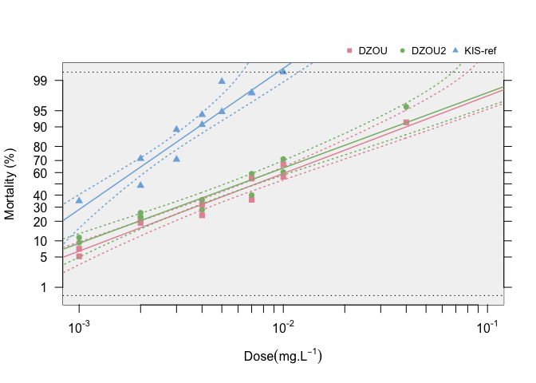

BioRssay will help you to analyze mortality data from bioassays of any kind (e.g.,insecti/pesti/herbi-cides, antibiotics, etc.).

For a comprehensive tutorial on the package, go to https://milesilab.github.io/BioRssay/ and navigate to “Get started” where all the functions and usage are explained with ample examples.
Installation
install.packages("BioRssay")- You can install the development version of rCNV from GitHub with:
if (!requireNamespace("devtools", quietly = TRUE))
install.packages("devtools")
devtools::install_github("milesilab/BioRssay", build_vignettes = TRUE)Please don’t forget to cite us if you use the package.
How to cite
Karunarathne, P., Pocquet, N., Labbé, P. et al. BioRssay: an R package for analyses of bioassays and probit graphs. Parasites Vectors 15, 35 (2022). https://doi.org/10.1186/s13071-021-05146-x